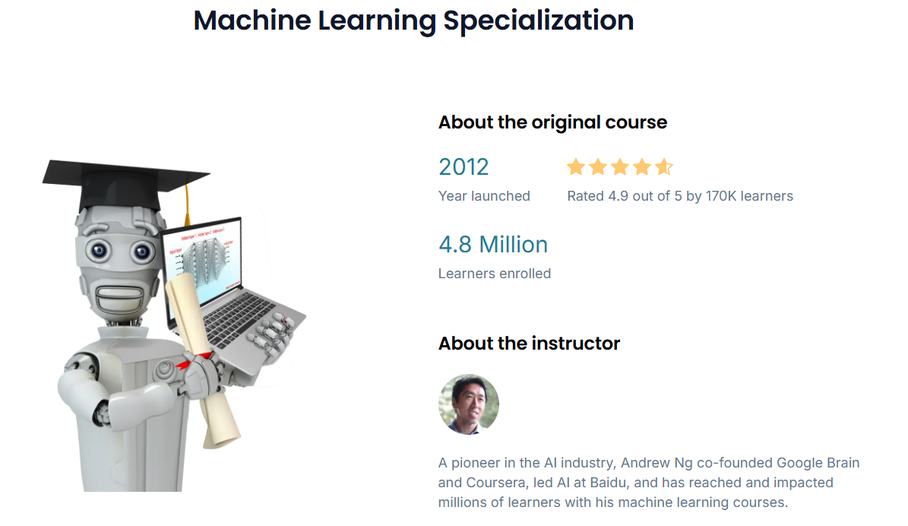
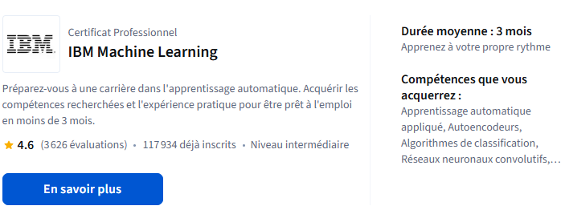
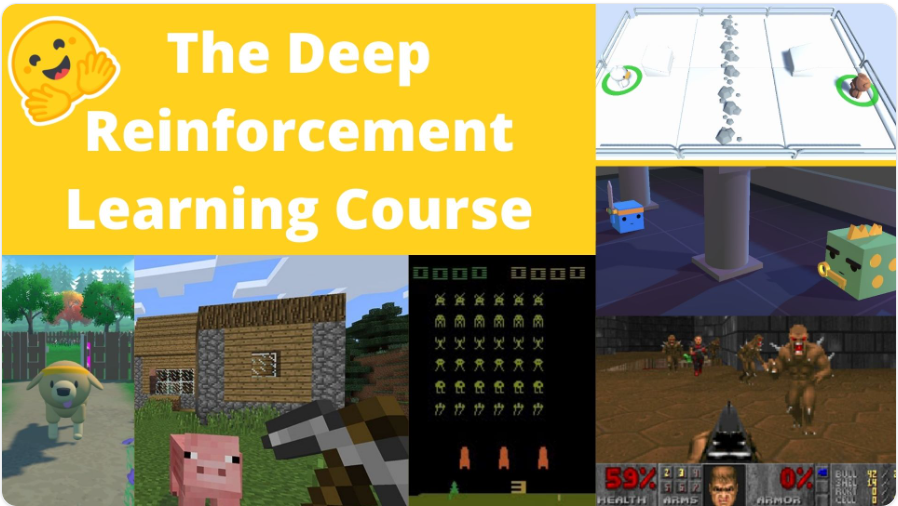
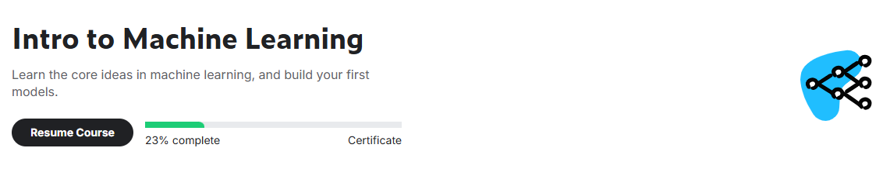

Annexes et ressources
Certificats (pour structurer votre parcours)
Les certificats ne remplacent pas un projet, mais ils aident à garder un cadre (rythme, exercices, évaluations) et à valider des compétences de base. Voici quelques options intéressantes.
1) Certificats payants (structurés, très guidés)
DeepLearning.AI — Machine Learning Specialization (Andrew Ng)
Spécialisation en 3 cours, très accessible, avec un bon équilibre entre intuition, code Python et bases mathématiques (régression, arbres, réseaux, recommandation, un aperçu RL). Disponible via DeepLearning.AI et Coursera.
Lien : page officielle

IBM — Certificat / parcours Data & IA (Coursera)
Parcours professionnalisant orienté compétences “industry-ready” (data, ML, outils), généralement avec des labs guidés et une progression très cadrée.
Lien : page officielle

2) Certificats gratuits (excellent pour apprendre en autonomie)
Hugging Face — Deep Reinforcement Learning Course
Cours gratuit et open-source pour passer de débutant à avancé en Deep RL, avec théorie + notebooks pratiques. Possibilité d’obtenir un certificat (selon le pourcentage d’exercices/assignments complétés).
Lien : introduction du cours

Kaggle — Intro to Machine Learning
Mini-formation gratuite, très pratique, pour prendre en main les bases du ML avec des notebooks (modèles scikit-learn, validation, métriques, etc.).
Lien : cours Kaggle
